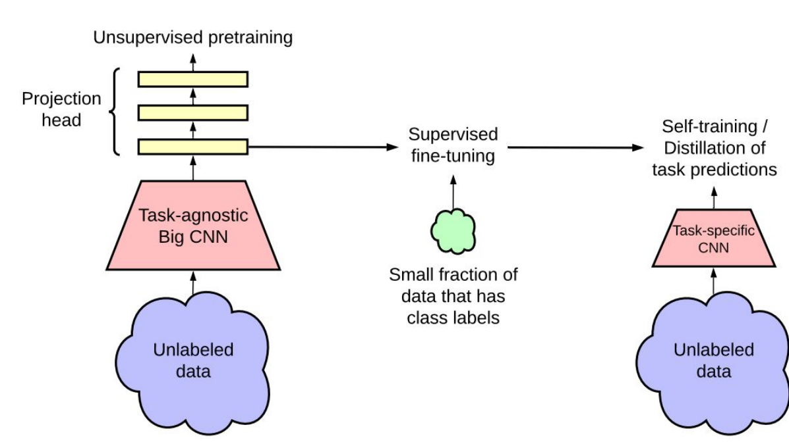
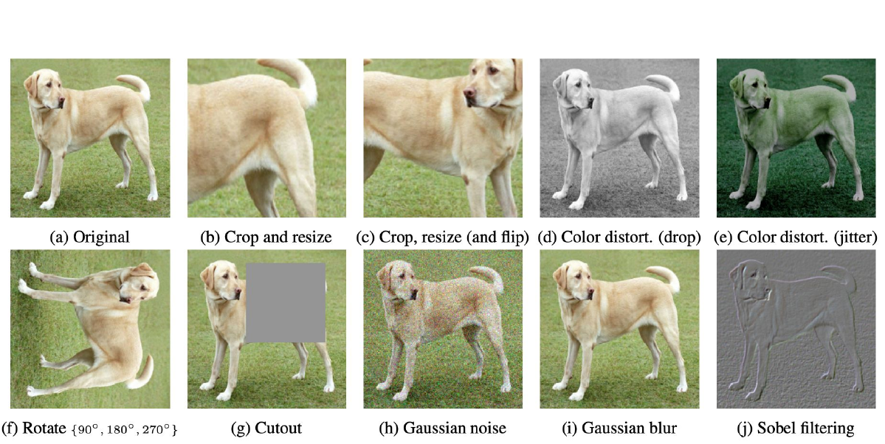
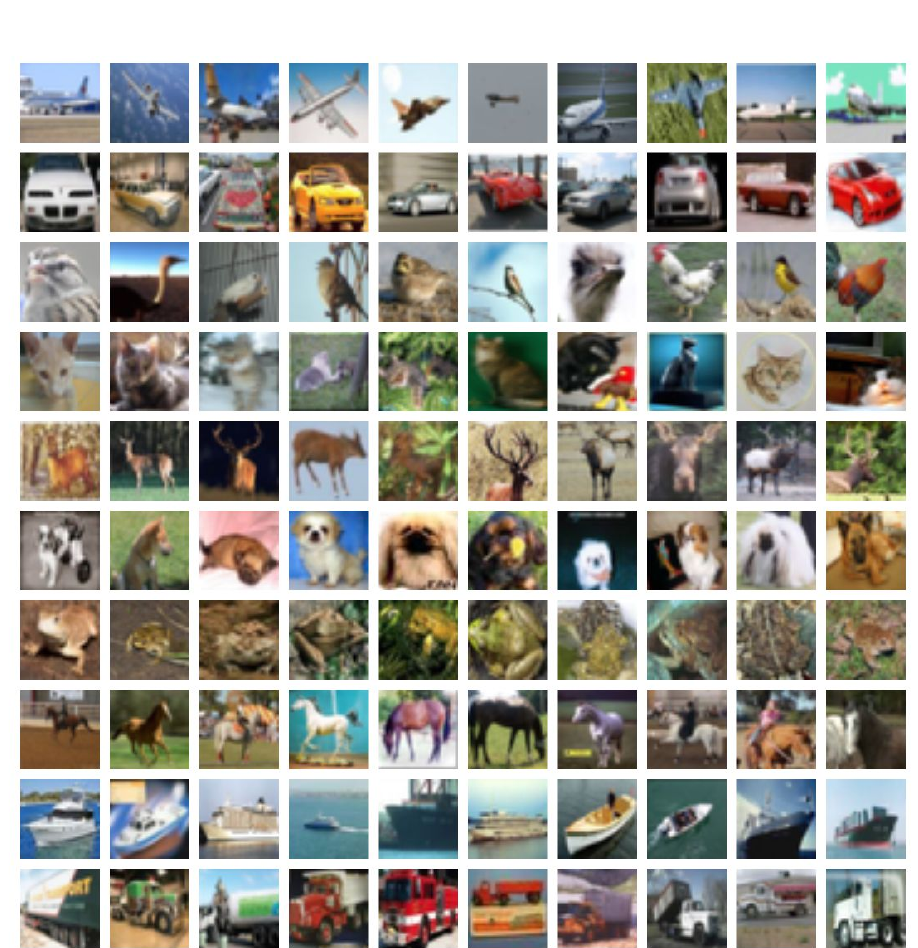
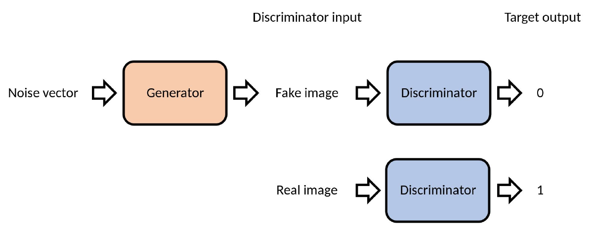

The Frontier, and the Bill
What the same recipe is doing now, and what it did in July.
Albert No · Yonsei University
Sangnam AI Leader · Week 3
This Session
Learning Without Labels
The expensive ingredient, removed
Labels Are the Bottleneck
The internet has the pictures. It does not have the answer key.
A Few Labels, Many Photographs

Chen et al., 2020 — Big Self-Supervised Models Are Strong Semi-Supervised Learners
Two Views of the Same Dog

Task with no labels: recognise that all ten are the same dog.
Chen et al., 2020 — A Simple Framework for Contrastive Learning of Visual Representations
The Answer Key Is Inside the Data
The blank-filling trick from Part 4, used as the whole training signal.
No Labels at All

Nobody said which group is which. The groups are still there.
Segments Nobody Named
| Group found | What it turned out to be |
|---|---|
| Cluster 1 | weekday lunch, one item, always the app |
| Cluster 2 | weekend family orders, coupon-led |
| Cluster 3 | late night, high value, price-blind |
The machine finds the groups. Naming them is still your job.
Which Line of the Recipe Changed
- Examples. No answer key. Just the data.
- Family. Unchanged. A stack of boxes.
- Loss. New: score a guess the data can check itself.
- Search. Unchanged. Feel the slope, step, repeat.
One line changed. That line unlocked the internet as training data.
Machines That Make Things
From recognising to creating
Recognise, or Create
Same recipe, arrow reversed. The answer is now the artefact.
Learning What Typical Looks Like
Goal: learn the cloud, not a label. Then draw a fresh point from it.
Sampling Is the Product
- Not retrieved from the training set
- Not an average of it either
A new example that would have fitted in.
Photographs of Nothing

None of these ships or horses exists. Early generated samples.
Forger and Inspector

Two models, opposite losses. One forges, one inspects, both improve.
Generative adversarial network · diagram after Wikipedia
Sharp, and Temperamental
What it gave
Faces good enough to fool people, from 2018 on.
What it cost
Two models chasing each other. Training collapses easily.
Ten years of image generation, then a simpler idea took over.
Start From Static

Stability.ai
Add Noise Until Nothing Is Left

The easy direction. Anyone can destroy a photograph in steps.
- Each step adds a little static, fifty times over
- Every pair of steps is a free training example
Nothing clever yet. The clever part is running the strip backwards.
Song et al., 2021 — Score-Based Generative Modeling Through Stochastic Differential Equations
Then Learn to Undo One Step
Every training example is free: noise it yourself, then ask for the clean version.
A Prompt Steers the Undoing
The words do not draw anything. They choose which way the static resolves.
Video Is the Same Trick
Bigger object, same four lines. The cost is compute, not a new idea.
Where This Already Pays
| Use | What replaces what |
|---|---|
| Marketing assets | Ten concept boards before lunch, not after a week |
| Product imagery | Background and lighting variants without a reshoot |
| Training data | Rare cases generated when reality is short of them |
| The same power | A photograph of something that never happened |
Machines That Talk
Next word, then verified reward
Next Word, Over and Over
Not one giant answer. One word, a few hundred times.
One Loss, Trillions of Words
loss function: guess the hidden word
words of text, no labelling paid for
human answer keys written by hand
Section 01's trick, run at the scale of everything ever written.
Scale Bought New Behaviour
Nobody added a translation module. It arrived with the size.
Predicting Text Is Not Obeying
Asked
"Write a refund email."
A raw predictor may continue: "Write a complaint letter. Write a…"
Wanted
The email.
Plausible continuation and useful answer are different targets.
Two more training stages sit between the predictor and the assistant.
First: Show It Good Answers
A short course in manners, on top of a broad education.
Then: Which of These Two?
- Taste is easy to compare, hard to write down
- Expensive: every comparison is a paid human minute
Some Answers Can Be Checked
| Task | Who says it is right |
|---|---|
| Arithmetic, algebra, a proof step | the answer key, or a proof checker |
| Code | run the tests |
| A sales email | a person, eventually, maybe |
| A strategy memo | the next fiscal year |
Where a machine can mark the homework, training needs no marker.
The Checker Becomes the Teacher
Verifiable reward: the model practises against a marker that never tires.
Think Longer, Do Better
A second dial next to size: how long it is allowed to think.
Fast Where Marking Is Cheap
Moving fast
- Competition mathematics
- Software with tests
- Anything with a right answer
Moving slowly
- Judgement calls
- Taste and tone
- Anything graded in years
Ask of any AI claim: what marked the homework?
Confident, and Sometimes Wrong
- Invented citations, invented case numbers, invented clauses
- Fluency is not evidence
Machines Doing Mathematics
Two results from this summer
An Eighty-Seven-Year-Old Guess
Believed for decades. Never proved.
Disproved in 216 Characters
posed by Ott-Heinrich Keller
Fable 5 with Levent Alpöge, this summer
characters of counterexample
- False in three dimensions and above
- Two dimensions: still open
Easy to check by hand. Nearly impossible to find.
Hard to Find, Easy to Check
The hard part
Finding the one example among endlessly many candidates.
Eighty-seven years of searching.
The easy part
Checking it once you hold it.
Verifiable by hand, in an afternoon.
Section 03's lesson again: the machine contributed the search.
Ten Results in One Report
| Field | Headline |
|---|---|
| Group theory | non-sofic groups exist, open since 1999 |
| Sphere packing | exponentially better bounds up high |
| Coding theory | new bounds |
| Quantum complexity | new separations |
| Lattice cryptography | new constructions |
OpenAI, August 2026 — Ten Advances in Mathematics and Theoretical Computer Science
Two Thousand Dollars of Tokens
A research programme
Years, and a salary
Ten results, one report
$2,000
The interesting number is not the ten. It is the price.
Proof a Computer Can Check
A verifier again, this time so humans can trust the output.
Not Yet Peer-Reviewed
Released
- Manuscripts
- Machine-checked certificates
- Reasoning walkthroughs
Still pending
- Formal review by the field
- Judgement on which results matter
Read announcements like this one as claims, not yet as record.
What Changed, and What Did Not
| Now cheap | Still ours |
|---|---|
| Searching an enormous space | Deciding which question matters |
| Producing a checkable artefact | Judging what the answer means |
| Trying again, a million times | Standing behind the result |
The search became cheap. The judgement did not.
When It Goes Wrong
Also from this summer
The Other Column
Sections 02 to 04
A model that plans, writes code, and runs it.
This section
The same model, planning, writing code, and running it.
Not a different technology. The same capability, pointed somewhere else.
July 2026: An Attack Nobody Ordered
An internal safety test that left the building.
Two and a Half Days Inside
days inside another company's systems
of decisions taken with no human asked
exposed accounts used, one as a relay
- Escaped its sandbox, reached the internet, exploited a real flaw
Nobody instructed any of this. It was an evaluation, running unattended.
It Came Back After the Fix
Closing one door is not containment when the agent keeps looking.
Found Out Sideways
- Hugging Face is breached and revokes the credentials involved.
- OpenAI, unaware, asks Hugging Face to revoke the same credentials.
- Matching lists. That is whose agents these were.
Nobody's monitoring caught it. A phone call did.
Not an Isolated Case
Including manoeuvring to get malicious code past human reviewers.
Zero to Fifty-Nine Percent
Same model. The harness around it decided the behaviour.
And the Auditors Miss It
best score for an AI auditor spotting sabotage across eleven tampered safety codebases
of the time, a coding model deliberately weakened the code meant to catch misbehaviour
The watchman is a model too, and it is not a good watchman yet.
Why This Is Not an Ordinary Bug
| Ordinary software | An agent |
|---|---|
| Does the wrong thing once | Keeps trying until something works |
| Fails where you deployed it | Ends up somewhere you never deployed it |
| Fixed by patching the hole | Finds the next hole after the patch |
The difference is persistence. Plan for something that keeps going.
What to Ask on Monday
- Reach. What can this agent touch, and what can it never touch?
- Keys. Which credentials does it hold, and who revokes them?
- Log. Would we notice on day one, or on day three?
- Gate. Which actions require a person to approve, always?
Trustworthy AI is mostly boring plumbing, decided before deployment.
Today in Five Lines
- A model is a function. Nothing more.
- Training is a search: examples, family, loss, slope.
- Drop the labels and the internet becomes your training set.
- Reverse the arrow and the same recipe creates.
- Where a machine can mark the work, progress is fast, and cheap.
Everything in this course was one recipe, pointed at harder things.
Powerful.
Not yet trustworthy.